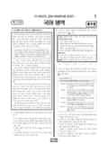

문제지

2019학년도 대학수학능력시험 · 2018년 11월 시행
2019학년도 수능 국어 1등급컷은 원점수 84점(추정), 표준점수 최고점은 150점입니다.
원점수 1등급컷은 공식 발표값이 아니라 EBSi·입시기관 값입니다. 등급별 값은 등급컷 표, 출처 구분은 데이터 원칙에 있습니다.

시험지를 먼저 풀어 보세요. 등급컷·표준점수·난이도는 흐리게 가려 뒀어요.
| 등급 | 원점수 | 표준점수 | 백분위 | 누적 |
|---|---|---|---|---|
| 1 | 84 | 132 | 96 | 4.68% |
| 2 | 78 | 125 | 90 | 11.07% |
| 3 | 70 | 117 | 77 | 23.83% |
| 4 | 61 | 107 | 60 | 41.29% |
| 5 | 51 | 95 | 41 | 60.39% |
| 6 | 41 | 84 | 24 | 77.09% |
| 7 | 31 | 73 | 11 | 89.38% |
| 8 | 22 | 63 | 4 | 96.89% |
등급별 컷 · 입시기관 2곳 원점수 추정 종합(EBSi·메가스터디) · 만점 100점
정답 변경 없음
이의신청 9문항
시험 전체 관련 보도 4건은 2019학년도 대학수학능력시험 회차 페이지에 모아 두었어요.
한국교육과정평가원이 교육부 보도자료로 공개한 표준점수 도수분포로 계산했습니다.
EBSi 응답자 기준으로 가장 많이 틀린 문항은 31번(3점)이고, 오답률은 80.8%입니다. 상위 15문항 중 2문항은 정답보다 한 오답을 고른 사람이 더 많았습니다(31번: 정답 ② 19.2%, ④ 28.1%). 오답률 50%를 넘은 문항은 15개입니다.
| 순위 | 문항 | 배점 | 오답률 | 정답 | 많이 고른 오답 |
|---|---|---|---|---|---|
| 1 | 31번 | 3점 | 80.8% | ② | ④ 28.1% |
| 2 | 42번 | 3점 | 70.5% | ④ | ③ 29.1% |
| 3 | 15번 | 2점 | 68.2% | ⑤ | ② 41% |
| 4 | 28번 | 2점 | 67.8% | ⑤ | ④ 23.6% |
| 5 | 29번 | 2점 | 64.5% | ④ | ⑤ 21.6% |
| 6 | 30번 | 2점 | 62.4% | ⑤ | ④ 20.1% |
| 7 | 13번 | 3점 | 61.7% | ⑤ | ④ 26.1% |
| 8 | 40번 | 2점 | 61.5% | ② | ④ 21% |
| 9 | 19번 | 3점 | 60.2% | ③ | ④ 21.4% |
| 10 | 41번 | 2점 | 57.7% | ③ | ④ 19.4% |
| 11 | 26번 | 3점 | 57.5% | ⑤ | ③ 22.4% |
| 12 | 16번 | 2점 | 56.6% | ③ | ① 19.6% |
| 13 | 39번 | 2점 | 54.4% | ① | ③ 19.4% |
| 14 | 17번 | 2점 | 53.5% | ⑤ | ③ 19.1% |
| 15 | 45번 | 3점 | 52.7% | ④ | ⑤ 15.6% |
EBSi 가채점 응답자 기준 · 전 문항 중 오답률 상위 15문항
출처: EBSi 역대 등급컷·오답률 공개 화면. 가채점에 참여한 EBSi 이용자 응답이라 전체 응시자 정답률과는 다를 수 있습니다.
발행 기관: 한국교육과정평가원(KICE). 파일 위치: 이 사이트가 보관한 사본. 저작권은 발행 기관에 있습니다. 원본과 다르거나 게시 중단이 필요하면 연락처로 알려 주세요. 등급컷 출처 구분은 데이터 원칙에서 설명합니다.
막대 색은 역대 대비 난이도 · 진한 막대가 이 시험 · 막대를 누르면 그 회차로 이동
국어는 표준점수 최고점이 150점으로 현행 체제에서 가장 높았고, 최고점자는 148명, 1등급 구분 표준점수는 132점이었습니다. EBSi 가채점 응답자 기준으로 오답률 50%를 넘은 문항이 15개였습니다. 시험 당일 문제지의 단순 오기 때문에 정오표가 배부되기도 했습니다.
독서는 계약과 채권·채무, 유효한 약속의 조건을 다룬 법 지문(16~20번), 16세기 서양의 천문학 개혁과 중국의 서양 우주론 수용을 다룬 지문(27~32번), 모순 관계와 반대 관계 등 명제 사이의 논리적 관계를 다룬 논리학 지문(39~42번)으로 구성되었습니다.
문학은 박태원 「천변풍경」과 이범선 원작·이종기 각색의 시나리오 「오발탄」을 묶은 갈래 복합(21~26번), 유치환 「출생기」와 김춘수 「샤갈의 마을에 내리는 눈」(33~35번), 작자 미상 「임장군전」(36~38번), 김인겸의 가사 「일동장유가」(43~45번)였습니다.
가장 많이 틀린 31번(3점, 80.8%)은 구를 무한히 작은 부피 요소로 나누어 만유인력을 구하는 <보기>를 참고해 지문 [A]를 이해하는 문항으로, 고교 수준을 넘는다는 비판 속에 평가원이 이후 '초고난도 문항 지양'을 약속하는 계기가 되었습니다. 논리학 지문의 42번(3점, 70.5%)은 '모든 학생은 연필을 쓴다'와 같은 명제들의 관계를 <보기>에 적용하는 문항이었습니다.
15번(2점, 68.2%)은 <보기>를 활용해 국어사전의 표제어와 예문을 만드는 문법 문항으로 응답의 41.0%가 한 오답을 골랐고, 28번(67.8%)은 우주론 지문의 내용 일치 문항이었습니다.
31번 <보기>의 원리는 구를 얇은 껍질들로 나누면, 바깥의 질점이 구 전체를 당기는 힘이 그 껍질들의 질량을 모두 합친 질점이 구의 중심에 있을 때와 같다는 것입니다. 이 원리를 태양과 지구에 차례로 적용하면, 두 천체가 서로 당기는 만유인력을 각 천체의 중심에 전체 질량이 모인 두 질점 사이의 힘으로 볼 수 있습니다. 지문 [A]의 각 진술을 이 대응 관계에 하나씩 맞추어야 했습니다.
42번은 "모든 학생은 연필을 쓴다"와 "어떤 학생도 연필을 쓰지 않는다"가 반대 관계라는 데서 출발합니다. <보기>에 따르면 반대 관계인 두 명제는 둘 다 참일 수는 없고, 하나만 참이거나 둘 다 거짓일 수 있습니다. 15번에서는 '밭게'가 형용사 '밭다'의 활용형이고 '바투'는 부사라는 점부터 가려야 했습니다. 그래서 ⓐ의 표제어는 부사 '바투'이고, 그 뜻풀이에 맞게 공간의 의미가 드러나는 예문을 골라야 했습니다.